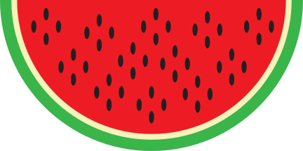
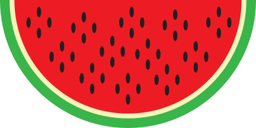

DIY Kiwi Watermelon Twist
Published: August 28th, 2017 by Brooklyn Estremera
Are you a fan of Berry Electric's summer favorite Kiwi Watermelon Twist smoothie? If you are, then you're in for a treat. Now, learn how to recreate this unbelievably tasty smoothie from home!
Berry Electric's Triple Berry Blast smoothie is a fruit smoothie with a lil twist! Made up of raspberries, blackberries, and blueberries, the Triple Berry Blast is a smoothie for the books. Complimented with delicious vanilla ice-cream, this drink is perfect for those mundane errand mornings!
Tips before you get started
- Always wash your hands before touching food
- Remember to wash your fruits as well! This is crucial in removing any icky bacteria that may have followed the fruits into your home! Stop them in their tracks before they party it up in your tummy.
- To ensure smoothness of your drink, it's best to make sure each ingredient is completely blended before adding the next. Add liquid to the blender first!
- Butter knife
- 1 Kiwi
- 5 Watermelon Cubes
- (Optional) Grapes
- 1 tbsp natural honey
- 1 cup unsweetened milk (nut, soy, animal)
What You'll Need:
- Cut kiwi in half, down the middle, then carve kiwi fruit out of skin
- Add unsweetened milk to blender
- Add skinned kiwi to blender
- add watermelon cubes to blender
- Blend
- Pour into tall glass
- Enjoy!